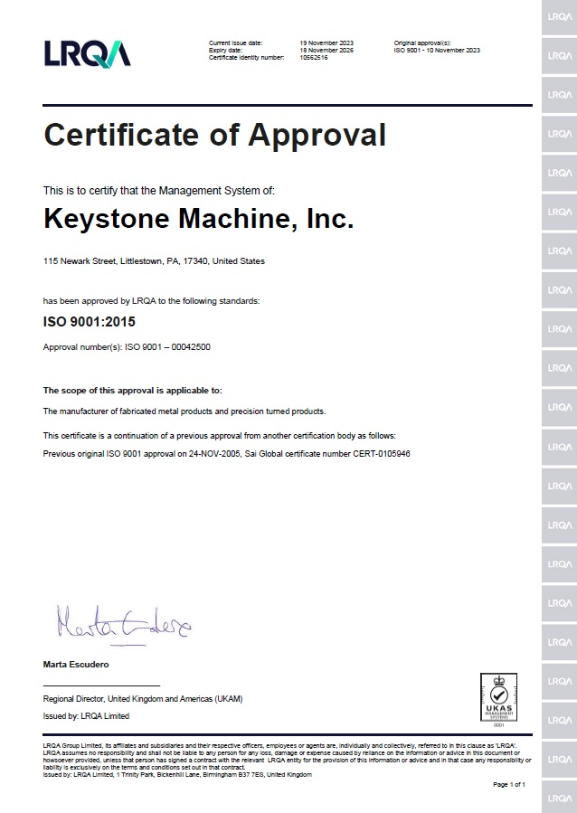

Keystone Machine, Inc.
Quality.
Documented.
ISO 9001:2015 certification for Keystone Machine, Inc. View the original Certificate of Approval.
KM / 05 — ISO 9001:2015 CertifiedLittlestown, Pennsylvania / Manufacturing resource for industry
Quality management / Certificate of approval
ISO 9001:2015
Certified.
Keystone Machine’s management system is approved by LRQA to ISO 9001:2015, as shown on the certificate.
- Organization
- Keystone Machine, Inc.
- Location
- 115 Newark Street, Littlestown, PA 17340, United States
- Scope of approval shown on the certificate
- The manufacture of fabricated metal products and precision turned products.
- Current issue date shown on the certificate
- 19 November 2023
- Expiry date shown on the certificate
- 18 November 2026

Quality reporting
We understand AS9100 quality reporting and perform PPAPs and SPC if required. Keystone has achieved “certified supplier” status with several customers.
More about our systems
Your next component starts here
Put your blueprint to work.
Send your drawings to sales@keystonemachine.com.